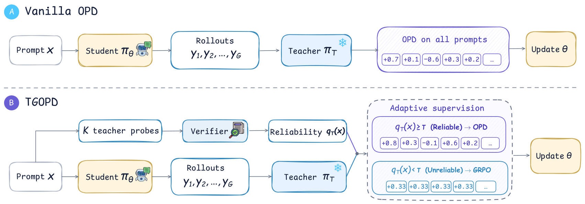

TGOPD: Verify the Teacher Before You Distill
TL;DR
- "Verify Before You Distill: Prompt-Level Teacher Gating for On-Policy Distillation" (arXiv 2609.02998, AllSpark Team) attacks OPD's silent assumption that the teacher is worth imitating on every prompt. Because reverse KL is mode-seeking, a confidently wrong teacher produces a strong, well-shaped, wrong gradient — and confidence can't catch it: on code, teacher self-confidence separates reliable from unreliable prompts at AUROC 0.51, i.e. a coin flip, and in the low-reliability regime the teacher's most confident sample is wrong 84% of the time.
- The fix is an audit, not a reweighting: the teacher generates $K_T=3$ probe rollouts per prompt, a verifier scores them, and the pass rate gates the prompt to either dense OPD (audit passed) or verifier-grounded GRPO (audit failed). Never blended. The probes run in the teacher's idle window, lifting teacher-node GPU utilization from 9.8% to 78.9% — the audit is nearly free because asynchronous OPD leaves the teacher idle 57–78% of the time by construction.
- TGOPD beats vanilla OPD in all six domain×scale settings (Qwen3.5-4B and Qwen3.6-35B-A3B; math, code, IF). The headline is 35B code, where every baseline distillation method transfers negatively on LiveCodeBench (student below the untrained base model) while TGOPD gains +3.0 over base and beats its own teacher. An ablation shows ~90% of the benefit comes purely from blocking the unreliable signal.
Why this matters
The OPD literature in this tracker has been converging on one question from several directions: when is the teacher's dense signal actually trustworthy? The survey frames dense reverse-KL supervision as OPD's superpower — roughly 10× the sample efficiency of RLVR because every token gets a learning signal. But that density is exactly what makes a bad teacher expensive. A wrong scalar reward miscredits one trajectory; a wrong teacher log-prob field miscredits every token, with the mode-seeking objective actively concentrating the student on the teacher's most confident behavior.
Prior fixes mostly read tea leaves from distributions — entropy gates, token trust regions, likelihood-ratio clipping. TGOPD's position is that these measure uncertainty, and uncertainty is not correctness: an equally confident right and wrong answer are indistinguishable to any function of the model's own distribution. Their Figure 2 diagnostic makes this concrete and domain-dependent — confidence is a usable reliability proxy on math (AUROC 0.73) and useless on code (0.51). If you only remember one empirical fact from this paper, that asymmetry is the one; it predicts exactly where the method helps most (code) and it should make you suspicious of every confidence-gated distillation recipe you've seen.
The second reason to care is the systems observation, which is almost a separate paper: in asynchronous OPD the teacher's job — a forward scoring pass over already-generated tokens — is so much cheaper than the student's autoregressive rollouts that the teacher node sits below 5% utilization for 59% of the measured hour. That idle capacity is precisely enough to fund the audit. It's a rare case where the principled fix and the free-compute fix are the same fix.
The core idea
In plain English: before letting the teacher grade the student's homework token by token, make the teacher do the homework itself a few times, and have an impartial verifier check whether the teacher actually gets it right. If at least 2 of 3 teacher attempts pass, admit the dense distillation signal for that prompt. If not, throw the teacher's opinion away entirely for that prompt and fall back to plain verifier-grounded RL on the student's own rollouts.
Teacher reliability is defined as expected verifier reward, and estimated by probes:
where $\pi_T$ is the frozen teacher, $r\in{0,1}$ is the same binary verifier used on student rollouts (unit tests for code, rule-based judges for math/IF), and $K_T$ is the probe budget. Since $K_T\,q_T(x)\sim\mathrm{Binomial}(K_T, R_T(x))$, the estimator is unbiased at any budget; the paper finds $K_T=3$ sufficient.
The gate is a hard threshold, $g(x)=\mathbb{1}[\,q_T(x)\geq\tau\,]$ with $\tau=2/3$ (a two-of-three majority), which selects between the two familiar advantages:
the per-token teacher–student log-likelihood ratio ($\beta$ scales the teacher signal, $\operatorname{sg}$ is stop-gradient), versus the group-centered GRPO advantage $\hat{A}^{\mathrm{GRPO}}_{i}=r(x,y^{i})-\tfrac{1}{G}\sum_j r(x,y^{j})$ broadcast to every token. The routing is a pure selector:
with $g(x)\in{0,1}$ — vanilla OPD and pure GRPO are its two degenerate endpoints. The advantage feeds the standard PPO-clipped surrogate. The authors are explicit that the two signals are never interpolated on one prompt: mixing supervision of different density and provenance inside one trajectory would make the effective signal depend on an arbitrary blending weight.

Figure 3 from the paper. The probe path (top of panel B) is the only added machinery, and it runs concurrently with student rollout generation.
How it works
One asynchronous rollout–update cycle:
for each prompt x in batch B:
concurrently: # probe fills the teacher's idle window
rollout nodes: sample G student rollouts y^1..y^G ~ pi_old(.|x)
teacher node: sample K_T probe rollouts yhat^1..yhat^K_T ~ pi_T(.|x)
q_T(x) <- (1/K_T) * sum_k r(x, yhat^k) # verifier-scored teacher pass rate
teacher scores log pi_T(y_t | x, y_<t) for all student tokens # as in vanilla OPD
verifier scores student rollouts r(x, y^i) # the RLVR signal
if q_T(x) >= tau: # audit passed (2-of-3 default)
A_{i,t} <- beta * (log pi_T - log pi_theta) # dense OPD advantage
else: # audit failed: teacher withheld
A_{i,t} <- r(x,y^i) - mean_j r(x,y^j) # centered GRPO advantage
# if all G rollouts share one outcome, advantage = 0 -> no update
update theta with PPO-clipped surrogate over B
Details that matter:
The gate is coarse on purpose. With $K_T=3$, $q_T$ only takes values in ${0,\tfrac13,\tfrac23,1}$, so the gate opens at "2 of 3 probes pass." A $K_T=5$ threshold sweep finds an inverted-U with a broad peak at $\tau=3/5$ — near a simple majority — beating vanilla OPD by +1.9 to +3.7 on the three math benchmarks. Too lenient ($\tau\le 2/5$) admits confidently wrong teachers; too strict ($\tau=5/5$) discards useful signal and drops HMMT below the vanilla baseline (52.0 vs 54.3). A coarse decision suffices; the gate doesn't need to rank prompts.
The fallback can be inert. When the gate closes and the student's rollout group has uniform outcomes (all wrong or all right), the centered advantage is exactly zero and the prompt contributes nothing. This is load-bearing for interpreting the ablations below.
The systems story. Probes are issued at the start of the cycle, overlapping student generation. Across four configurations (single/multi-domain × 4B/35B) baseline teacher utilization is 5.0–9.8% with 57–78% of samples under 5%; with probes it rises to 57.7–82.8% with idle time at 0–2%. Rollout-node utilization moves within ±2-point run variance, and a matched 35B code run measures a 5.9% increase in mean step time — modest, not zero. Training runs on slime with IcePop correcting async train–inference mismatch (shared by all baselines).
Results
Setup: students Qwen3.5-4B (dense) and Qwen3.6-35B-A3B (MoE, 3B active); per-domain teachers are the same base model trained with GRPO then frozen — so the "Teacher" row doubles as a GRPO-only reference. Data: DAPO-Math-17K, CodeI/O, Nemotron-Cascade 2 (IF). Baselines share everything but the supervision rule: vanilla OPD, TrOPD (token trust regions), RG-OPD (verifier-likelihood agreement), and an RLSD-style direction/magnitude split.
- All six single-domain settings improve over vanilla OPD, ordered exactly as the confidence diagnostic predicts: code +3.0/+2.9 average (4B/35B), IF +1.6/+1.9, math +1.5/+1.2. TGOPD is first among distillation methods on 7 of 14 columns and surpasses the teacher itself on six.
- 35B code is the clean kill. On LiveCodeBench every other method lands below the untrained base model (OPD −0.8, TrOPD −2.5, RG-OPD −3.5, RLSD-style −4.1); TGOPD is +3.0 over base and +1.3 over the teacher. At 4B, vanilla OPD closes 21% of the base→teacher gap on LCB; TGOPD closes 55%.
- Multi-domain OPD (per-prompt routing to domain teachers) gains +1.14 (4B) and +0.95 (35B) on the seven-benchmark average with no modification to the gate.
- The decisive ablation: what happens after the gate closes. Replace the GRPO fallback with pure masking (gated-off prompts contribute nothing) and you keep ~90% of the gain (+1.08 vs +1.20 average across four settings). Blocking the unreliable teacher is the mechanism; the GRPO replacement is a small bonus that wins 3 of 4 settings. The fallback helps most where execution-based verification is sharp (OJBench at both scales).
- RLSD-style is the cautionary baseline: demoting the teacher to a magnitude-scaler on every prompt falls below the untrained base on 8 of 14 columns. Uniformly weakening the teacher throws away good signal with the bad; the entire point is selectivity.
How it connects
- Same-day sibling: One-Shot OPD (arXiv 2609.04172, merged into the tracker today) argues OPD is data-overfed but algorithm-starved — one query's supervision already covers most reachable states. TGOPD is the complementary claim: the constraint isn't just how much teacher signal you use but whether it's admissible at all. Together they sketch a curation-first view of OPD: few prompts, verified teachers.
- DAPD diagnosed the privilege illusion in on-policy self-distillation — a teacher that only looks competent from a privileged position. TGOPD's "confidently wrong teacher" is the external-teacher version of the same failure, and its verifier probes are the blunt-but-outcome-grounded answer where DAPD used dual anchoring.
- FutureBridge-OPD validates teacher guidance by rolling out futures from teacher-suggested states in agentic OPD. That's a trajectory/token-granularity audit; TGOPD deliberately retreats to prompt granularity and argues (via the threshold ablation) that coarse is enough. Whether fine-grained outcome audits beat prompt-level ones at matched probe compute is the open head-to-head.
- OPD Isn't a Free Lunch documented when multi-teacher OPD underdelivers; TGOPD's MOPD experiments show a per-prompt, per-teacher audit composes cleanly with domain routing — routing chooses which teacher, the gate chooses whether.
- The idle-teacher observation pairs with Headroom-Drift Replay (arXiv 2609.03941, also in today's crop): both papers treat the RL/OPD pipeline's wasted capacity — idle teacher nodes, stale rollouts — as a resource to spend on better training signal rather than pure speed.
Critical take
The core result is convincing but the accounting has soft spots. First, the comparison spends extra verifier calls and teacher decodes per prompt; "the compute was idle anyway" is true for this cluster topology, but a deployment that right-sizes its teacher node (or shares it across jobs) pays real cost for the probes, and the paper's own 5.9% step-time increase says wall-clock neutrality isn't quite achieved. Second, the mask-only ablation cuts both ways: if ~90% of the gain is just not distilling on bad prompts, the contribution is closer to "verified data filtering for OPD" than to a new supervision scheme — valuable, but a simpler framing than the routing machinery suggests. Third, everything rests on a binary automatic verifier; the authors say so, but it bears emphasis that the domains where teachers are most confidently wrong (open-ended reasoning, agentic tasks with fuzzy success) are exactly where you can't run this gate today. And the probe estimator audits the teacher from scratch on prompt $x$ — a teacher can fail to solve a problem it can still grade competently token-by-token (grading is easier than generating), so the gate plausibly withholds some genuinely useful dense signal; the $\tau=5/5$ degradation hints at this cost. Finally, teachers here are GRPO-trained versions of the same base as the student — a family match that flatters distillation generally; cross-family gates are untested.
If you remember three things
- Confidence is not correctness, and on code it's not even correlated — AUROC 0.51, with the teacher's most confident sample wrong 84% of the time on unreliable prompts. Any distillation gate built purely from model distributions inherits this ceiling.
- Audit at the prompt level with the verifier you already have: 3 teacher probes, 2-of-3 majority, route to dense OPD or GRPO — never blend. ~90% of the gain comes from blocking bad teacher signal, and the threshold optimum is broad, so don't over-tune.
- Asynchronous OPD leaves the teacher idle by construction (below 5% utilization most of the time); reliability probes are close to free if you overlap them with student rollouts. Idle-capacity audits are a general pattern, not a TGOPD-specific trick.